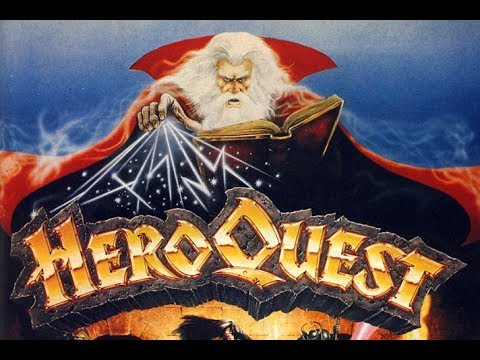

This is a simple DM for those who don't have enough people or want to play as the evil wizard in heroquest. You don't want to see the whole quest before you play or have any player have an advantage so the virtual DM reads out the quest as it occurs.
Quests
01: The Trial
02: The Rescue of Sir Ragnar
03: Lair of the Orc Warlord
04: Prince Magnus' Gold
05: Melar's Maze